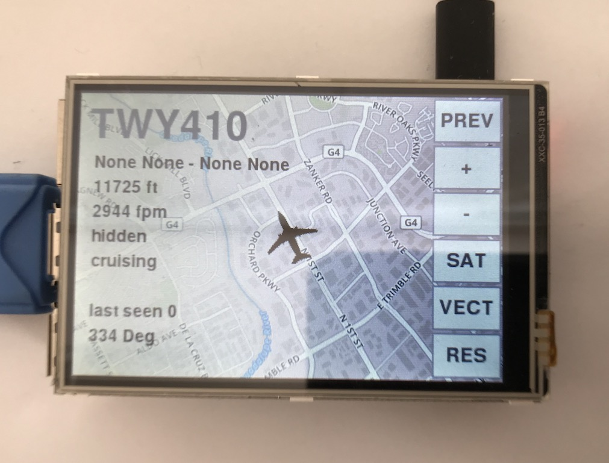

Inspiration
I was inspired to create this project by another person who created an electronic marquee that would anounce the flight number of the nearest airplane flying overhead. From this project I discovered that it was fairly easy to use software defined radio to capture the data sent by most of the airplanes flying near my home. I ordered the cheapest SDR dongle and antenna that I could find on Amazon and installed Dump1090 on a raspberry pi 2.
Dump1090 can be configured to write json data to a directory used by a webserver, so I began my project by creating a python script to read the file when it was updated and print the list of detected airplanes in the console
I also had an extra 3.5" lcd touchscreen for the raspberry pi, so I decided that it would be fun to make a UI using pygame.
Project Goals
- Detect all airplanes in the sky transmitting their name and position
- Display all detected airplanes on a moving map and in a list
- Display information about an individual airplane on a moving map
-
The airplane overview screen with vector graphics
-
Another three airplanes detected

-
The airplane tracking screen
-
The airplane list
-
The airplane tracking screen with satellite graphics
-
The airplane overview screen with satellite graphics
Improvements?
- Add UAT
- Add weather
- Use a better display with a faster refresh rate
- Create a better algorithm to render the map
- Make a nice housing for it